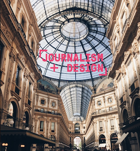
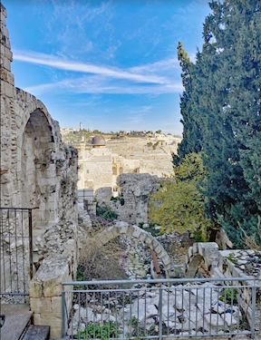
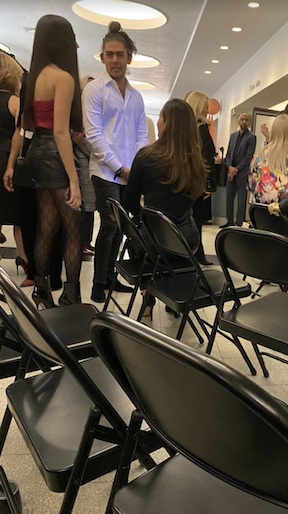
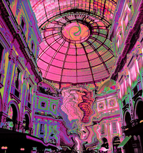
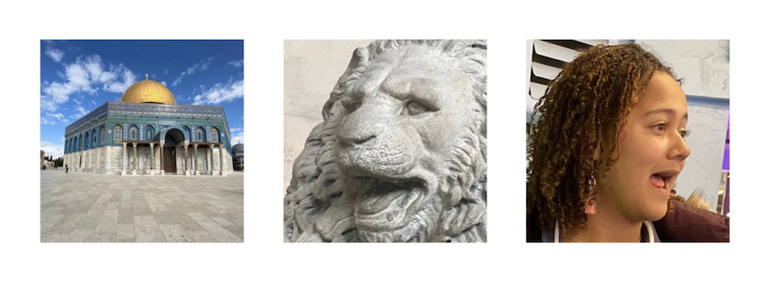

For this project I made five final edits in Adobe Photoshop of various photos I have taken. For one of the photos I simply added a logo over it. For another photo I corrected the aspects of it that were too light and too dark. For a group picture I cropped it to a 16:9 ratio. I cropped a portrait, a close-up, and a photo of a location to squares and made a banner featuring all three side-by-side at equal size. For a final photo I made a crazy creative image.
    